Introduction
On Day 2 of Week 4, I learned Edge Impulse and built an Alphabet Classification project using image data of letters A, B and C. I collected data, trained a classifier, and tested live predictions using a connected mobile device.
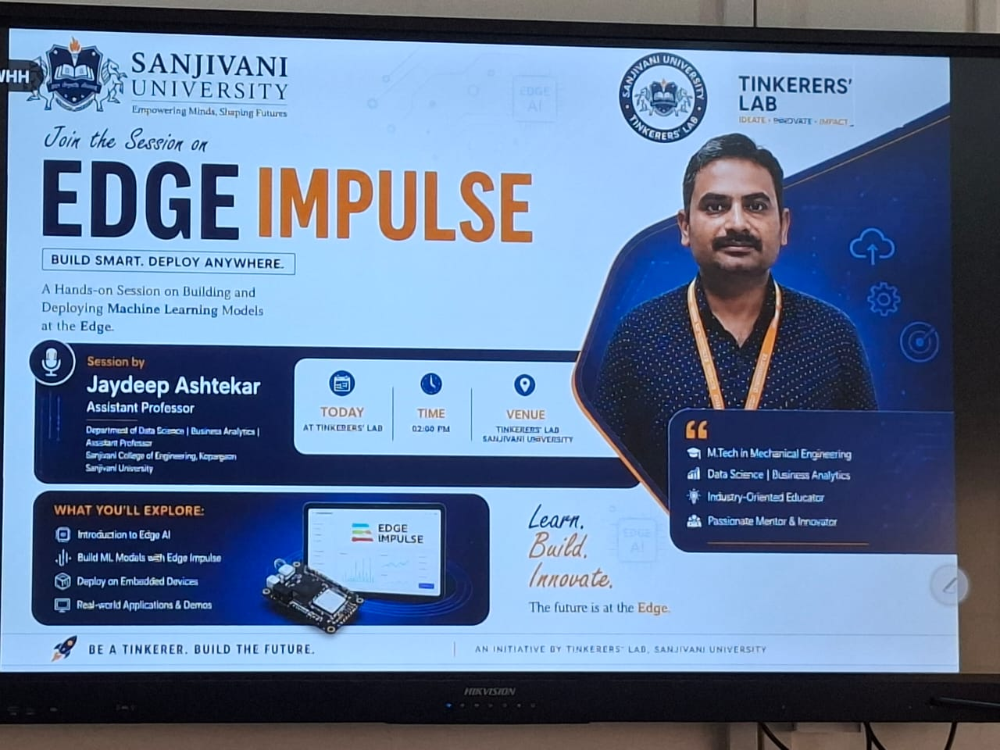
Step 1: Search Edge Impulse
Search Edge Impulse completed as part of the Edge Impulse workflow for alphabet classification.
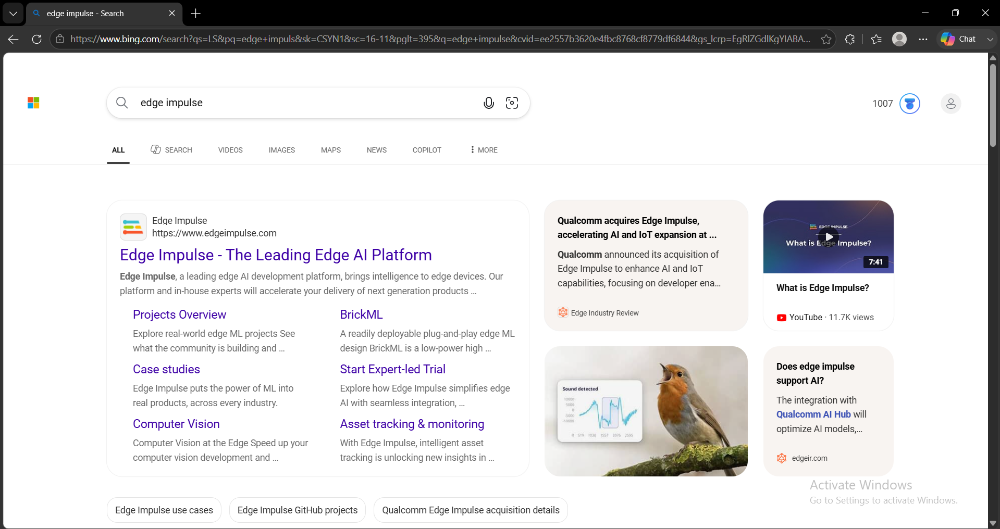
Step 2: Open Homepage
Open Homepage completed as part of the Edge Impulse workflow for alphabet classification.
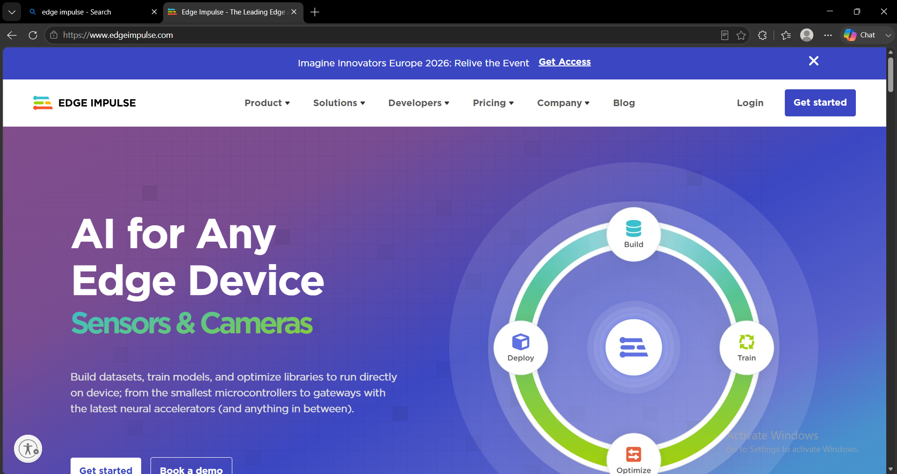
Step 3: Login to Studio
Login to Studio completed as part of the Edge Impulse workflow for alphabet classification.
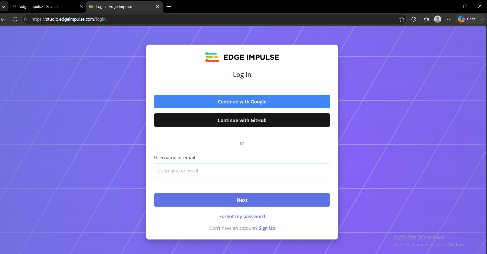
Step 4: Create New Project
Create New Project completed as part of the Edge Impulse workflow for alphabet classification.
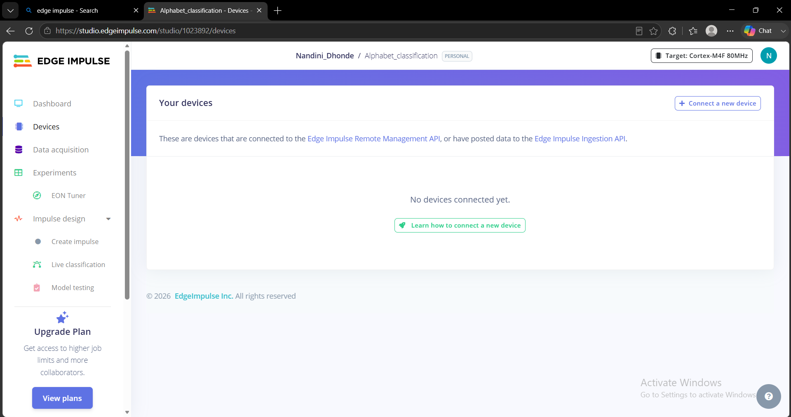
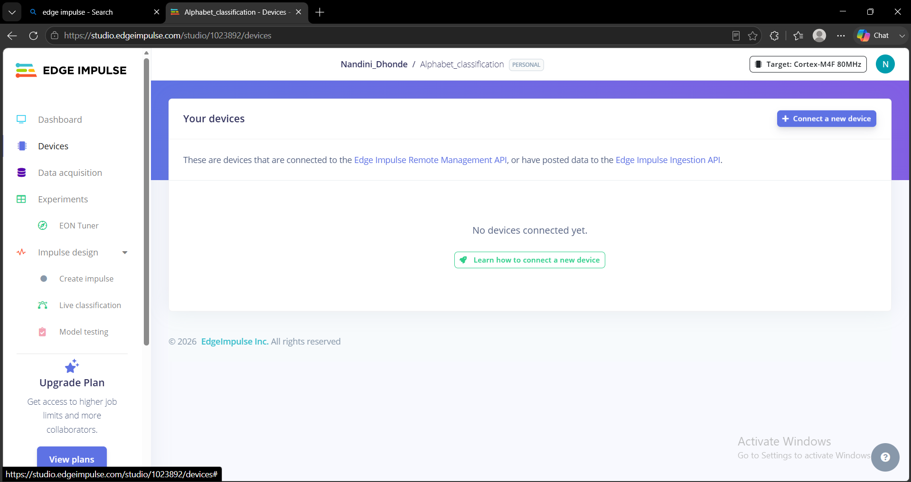
Step 5: Alphabet Classification Setup
Alphabet Classification Setup completed as part of the Edge Impulse workflow for alphabet classification.
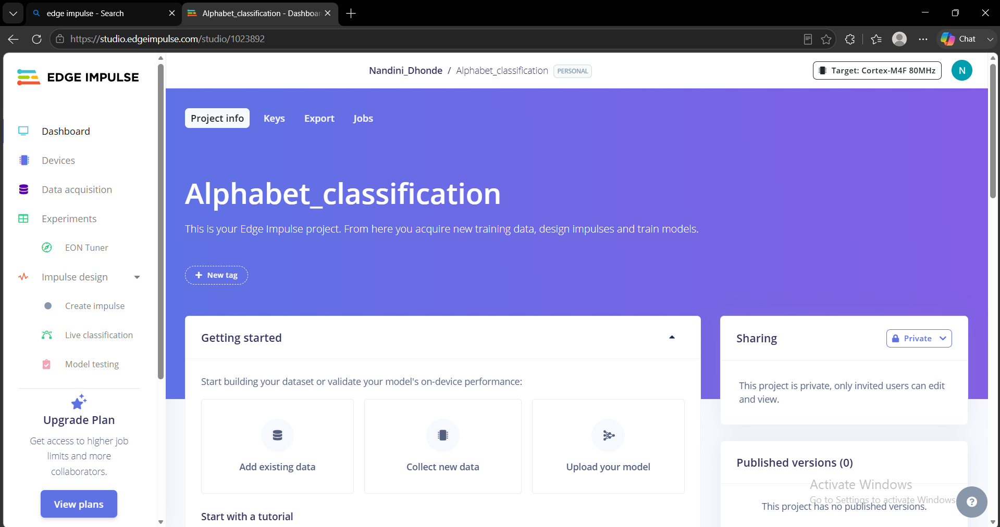
Step 6: Connect Devices
Connect Devices completed as part of the Edge Impulse workflow for alphabet classification.
Step 7: Add New Device
Add New Device completed as part of the Edge Impulse workflow for alphabet classification.
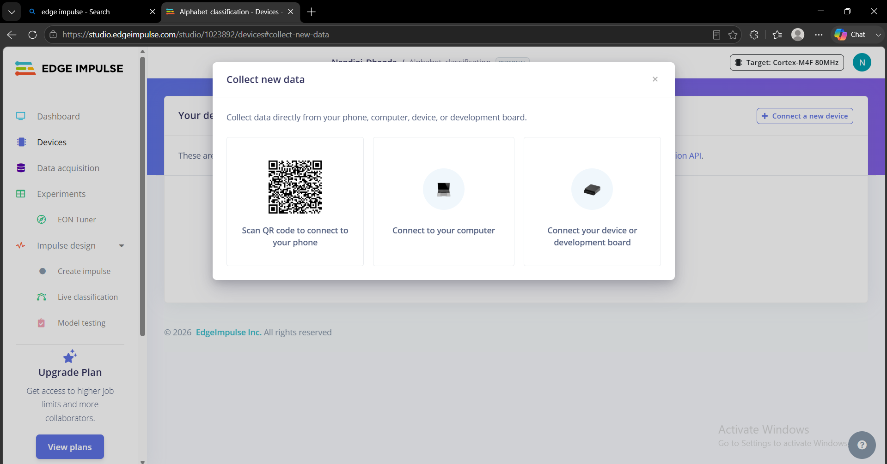
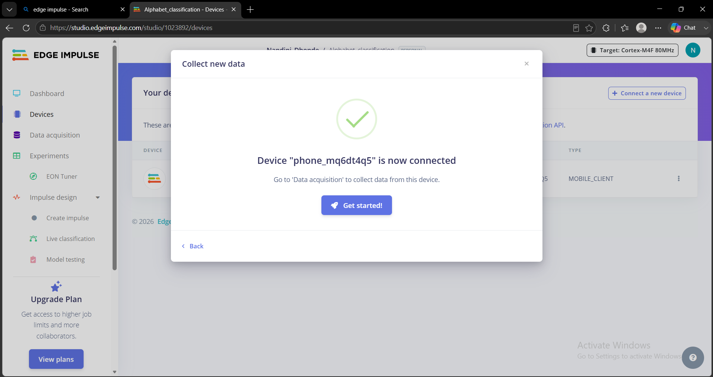
Step 8: Device Connected
Device Connected completed as part of the Edge Impulse workflow for alphabet classification.
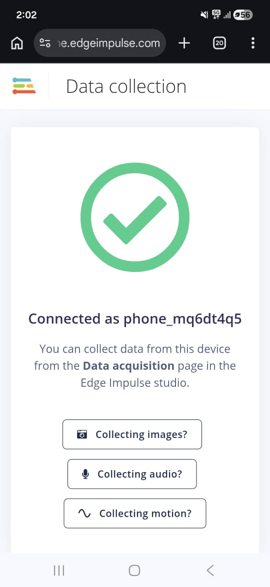
Step 9: Verify Device
Verify Device completed as part of the Edge Impulse workflow for alphabet classification.
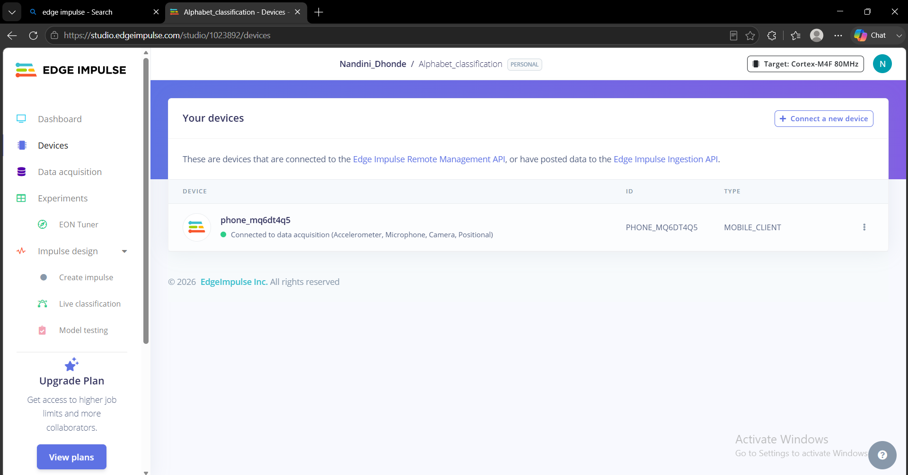
Step 10: Data Acquisition
Data Acquisition completed as part of the Edge Impulse workflow for alphabet classification.
Step 11: Collect First Samples
Collect First Samples completed as part of the Edge Impulse workflow for alphabet classification.
Step 12: Dataset Table
Dataset Table completed as part of the Edge Impulse workflow for alphabet classification.
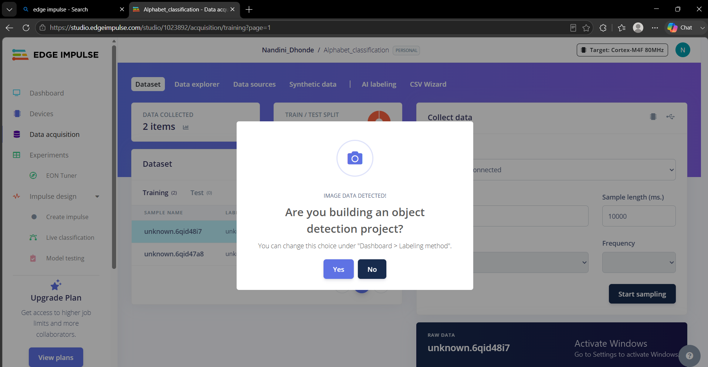
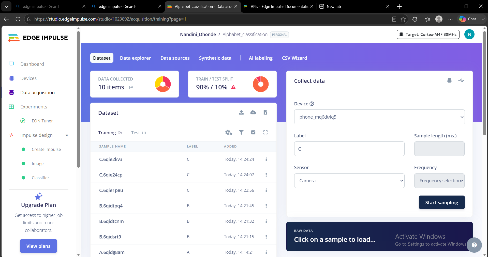
Step 13: Collect More Data
Collect More Data completed as part of the Edge Impulse workflow for alphabet classification.
Step 14: Create Impulse
Create Impulse completed as part of the Edge Impulse workflow for alphabet classification.
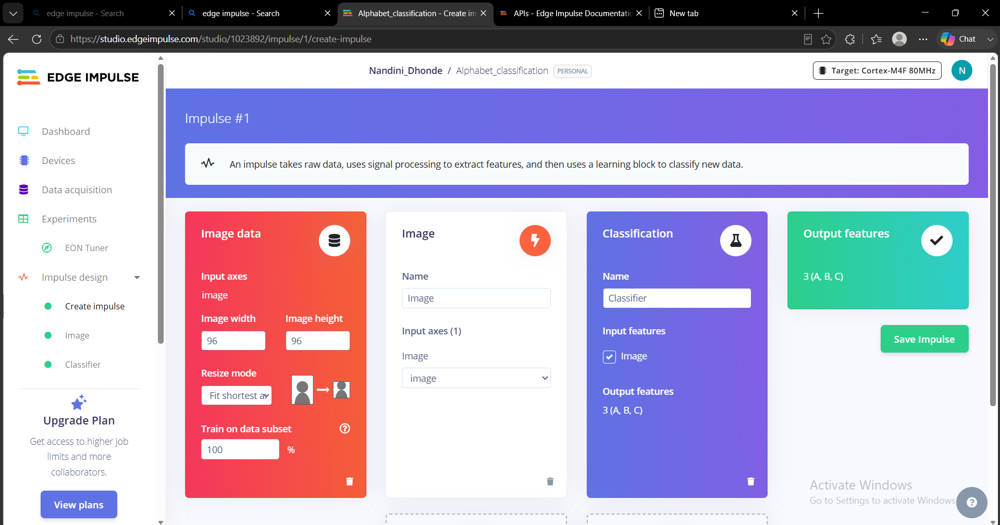
Step 15: Configure Image Parameters
Configure Image Parameters completed as part of the Edge Impulse workflow for alphabet classification.
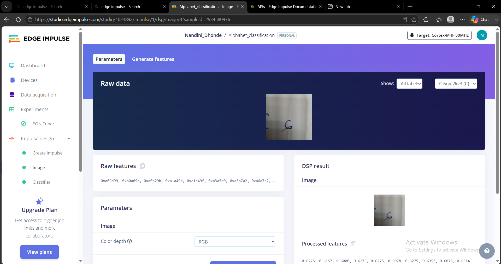
Step 16: Train Classifier
Train Classifier completed as part of the Edge Impulse workflow for alphabet classification.
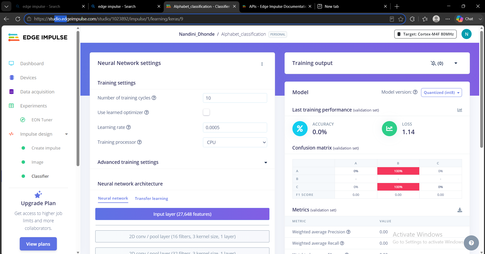
Step 17: Classify New Data
Classify New Data completed as part of the Edge Impulse workflow for alphabet classification.

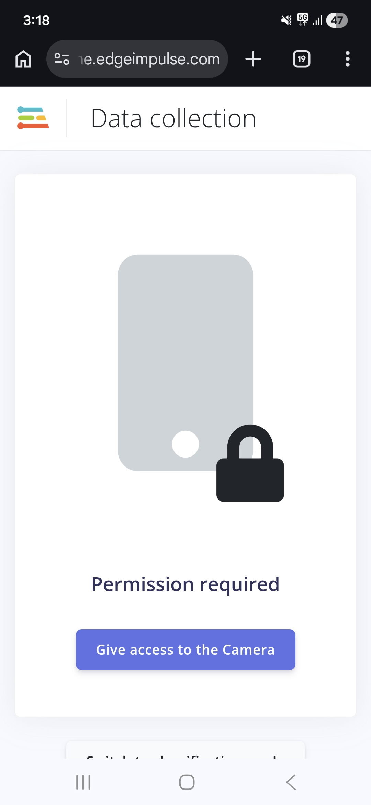
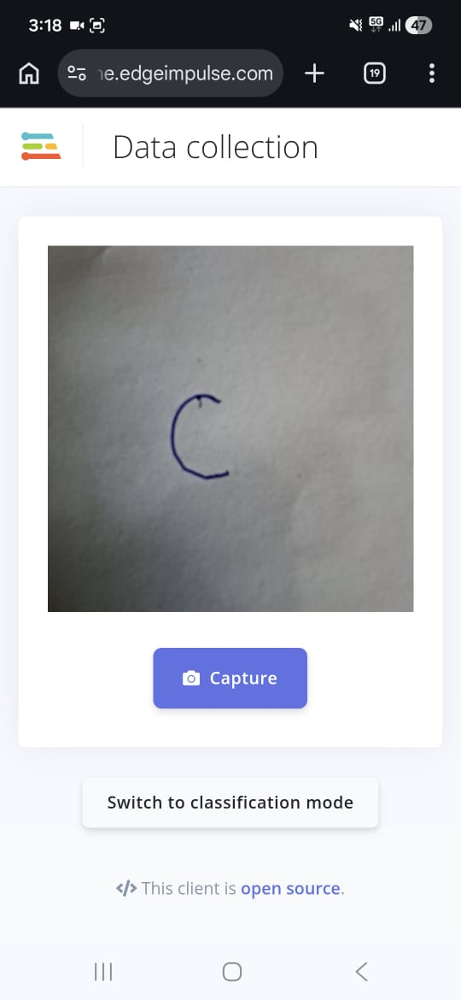
Step 18: View Classification Results
View Classification Results completed as part of the Edge Impulse workflow for alphabet classification.
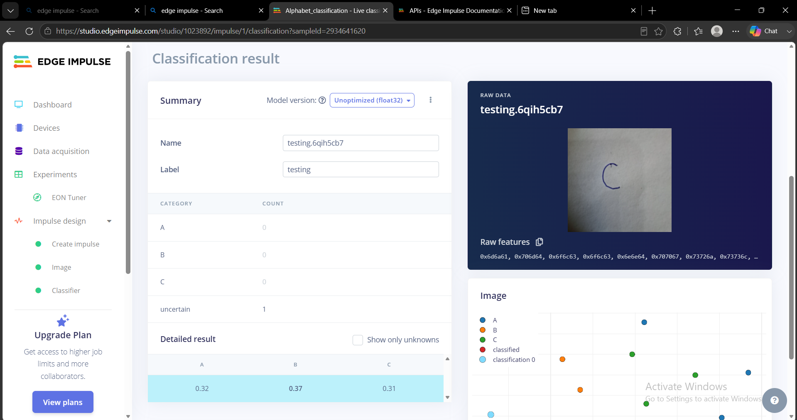
Outcome
- Created an Edge Impulse project.
- Connected a mobile device.
- Collected and labeled datasets.
- Built an image classification impulse.
- Trained a neural network model.
- Tested live predictions successfully.
Key Learnings
- Dataset collection and labeling.
- Image classification workflow.
- Model training and testing.
- TinyML and Edge AI concepts.
Conclusion
This project provided hands-on experience with Edge Impulse, machine learning workflows, and image classification on edge devices.